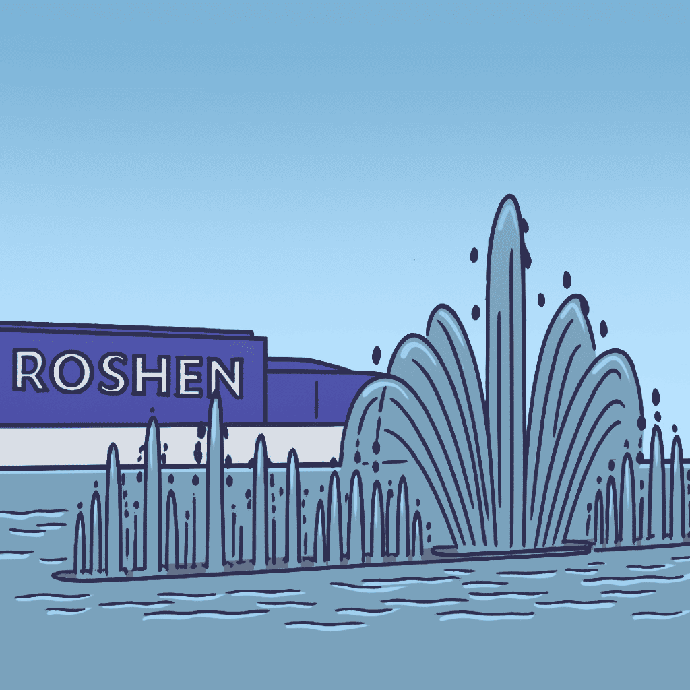
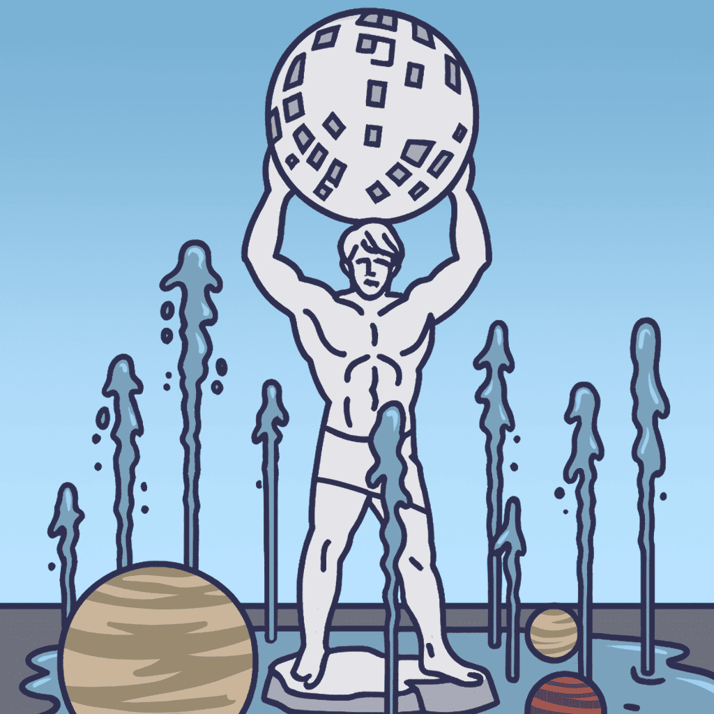
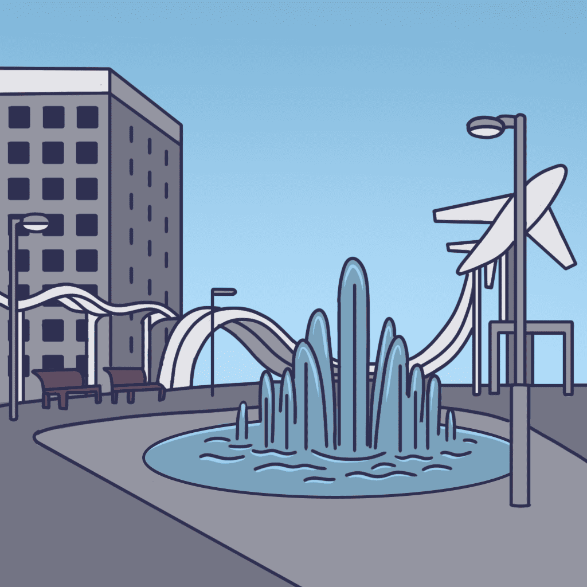
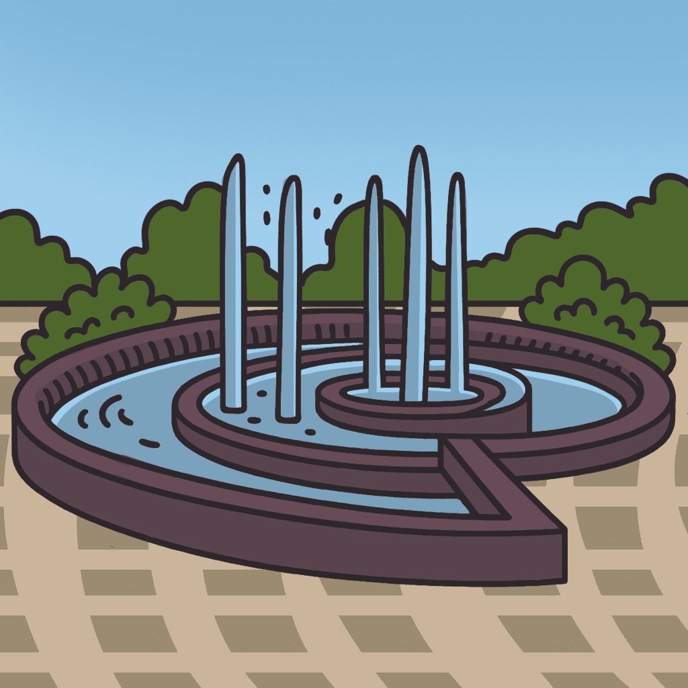
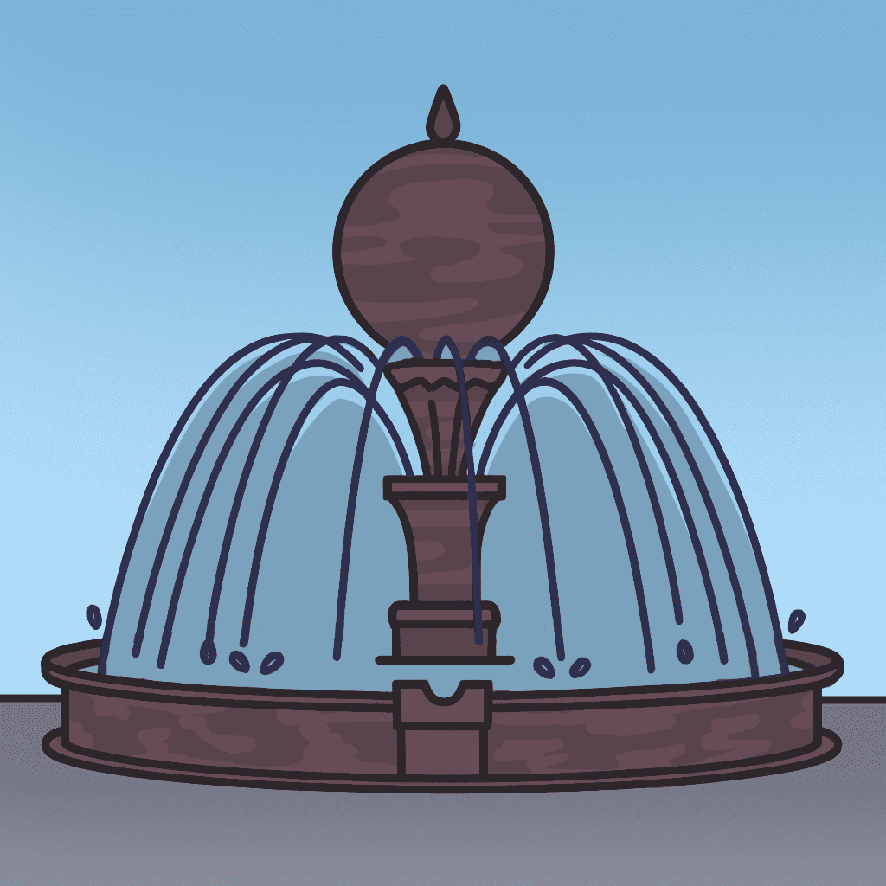
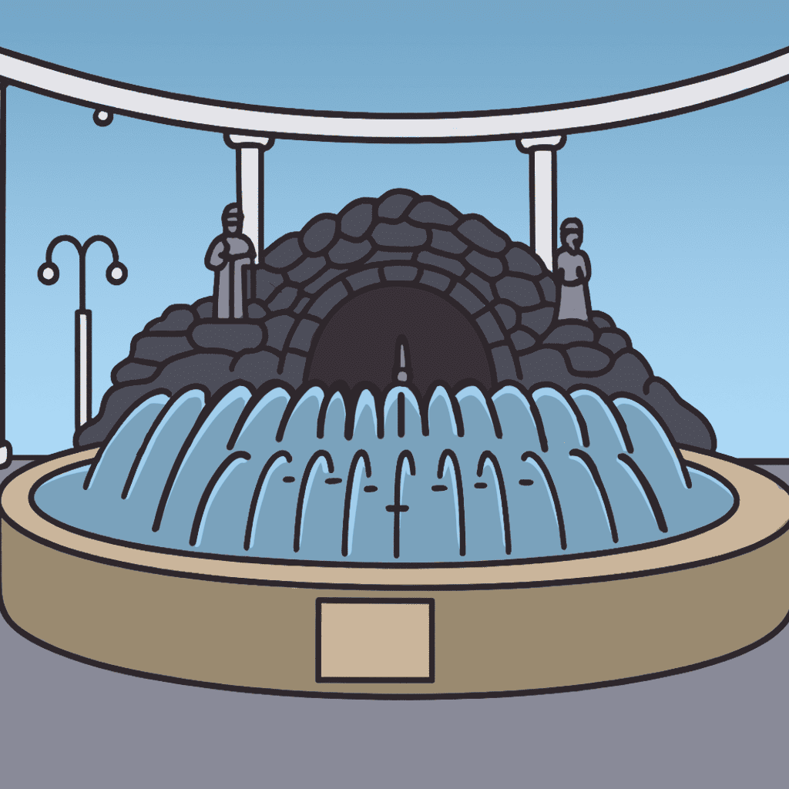
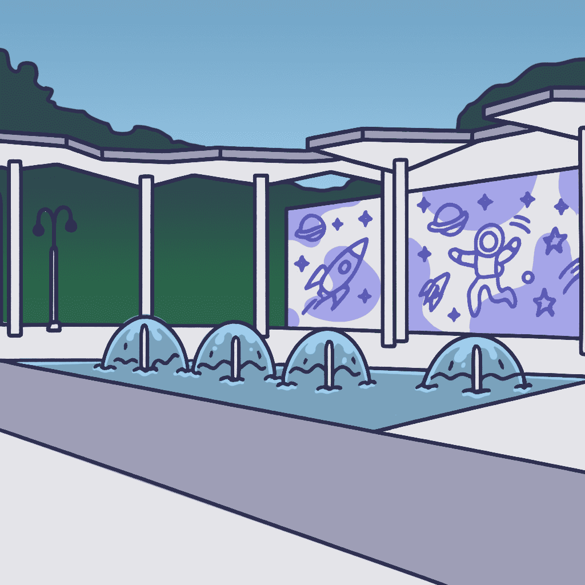
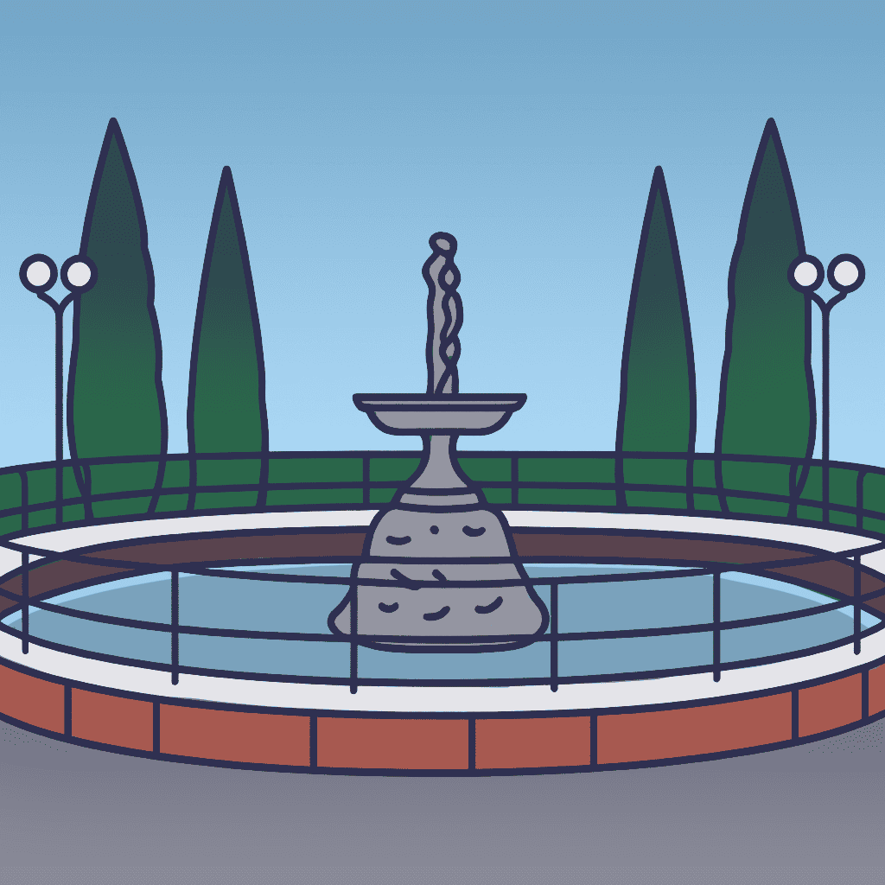
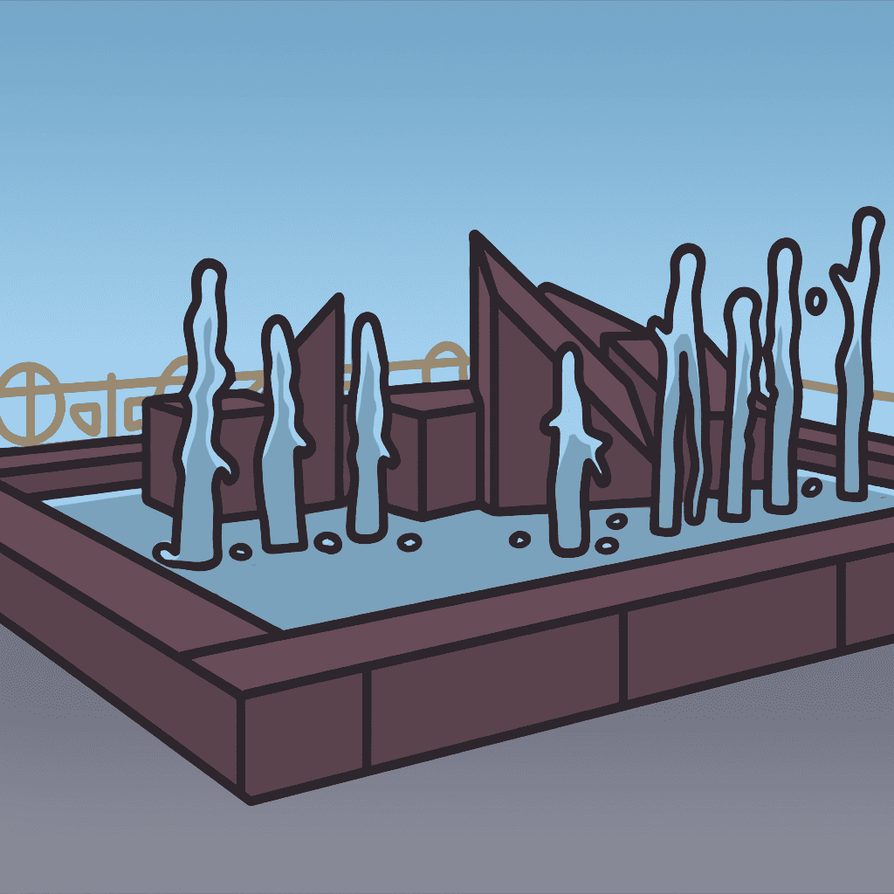

Вінниця недаремно вважається містом фонтанів. Вони прикрашають площі, парки та набережні нашого міста, створюючи атмосферу спокою й гармонії. Деякі з них стали справжніми туристичними символами області. Нижче наведена добірка десяти найцікавіших фонтанів, якими пишається Вінниця.
Найвідоміший фонтан України, розташований на річці Південний Буг. Відкритий у 2011 році, він вражає світловими, лазерними та музичними ефектами, створюючи на воді справжнє шоу.
Символ класичної Вінниці. Після реконструкції 2013 року фонтан отримав сучасну підсвітку й повернув собі колишню велич. Особливо гарний увечері, коли навколо збираються сім’ї й молодь.
Сучасний пішохідний фонтан біля скульптури “Людина з кулею”. Його струмені змінюють висоту під музику, створюючи ефект руху планет — символ прогресу та руху вперед.
Розташований у районі Лісопарку, цей фонтан створено у 2018 році. Він має 16 динамічних струменів, які змінюють напрямок і висоту — справжня окраса нової площі.
Оригінальний фонтан у формі спіралі на площі Незалежності. Увечері підсвічується м’яким світлом, створюючи атмосферу затишку перед готелем “Поділля”.
Один із найстаріших міських фонтанів, який став центром туристичних прогулянок. Розташований біля вежі Артинова, він поєднує історичну архітектуру й гармонійний дизайн.
Новий фонтан у сучасному житловому масиві “Поділля”. Має куполоподібну форму з центральним підсвіченим джерелом і затишним сквером довкола.
Знаходиться біля центрального входу до парку ім. Горького. Його невелика, але гармонійна композиція зустрічає відвідувачів і створює святковий настрій.
Розташований перед головним корпусом ВДПУ. Скромний, але дуже символічний — місце зустрічей студентів і простір для відпочинку в центрі міста.
Фонтан біля обласної лікарні, який став окрасою зеленої зони проспекту Пирогова. Його архітектура проста, але гармонійна — справжній куточок спокою серед міської метушні.
